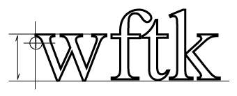

The wftk is simultaneously a workflow application and a toolkit which can be used to build
specialized workflow components. The current version is v1.0 as of July 2002. You can
find out more about the following topics:
Using the wftk
Technical details
Miscellaneous
As of this writing (January 2002) most of this is still incomplete.
Copyright (c) 2000-2002 Vivtek. Please see the licensing
terms for more information.